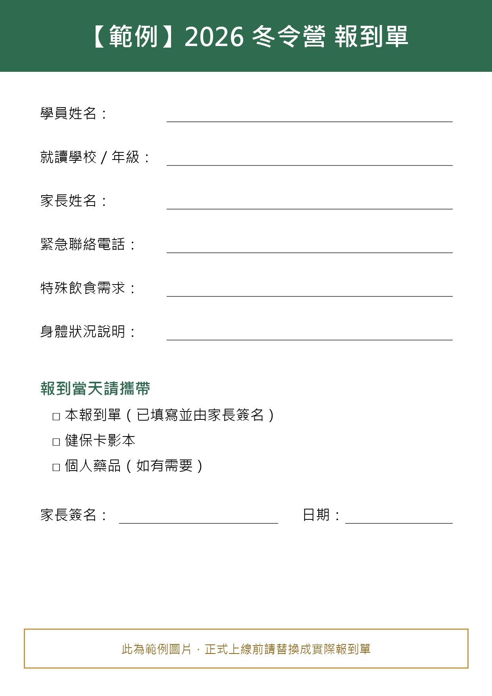

最新公告
公告載入中…
參加前請先看
最新公告
公告載入中…
報名注意事項
- 【範例】請由家長或監護人填寫報名表，每位學員填寫一份。
- 【範例】報名送出後，請留意報名表中填寫的信箱，確認信將於 3 個工作天內寄出。
- 【範例】錄取名單將公布於「錄取名單」分頁（姓名與身分證字號部分遮蔽），不另行個別通知。
- 【範例】學員如有特殊飲食需求或身體狀況，請於報名表中註明。
- 【範例】活動期間請穿著輕便服裝與運動鞋，並自備水壺。
- 【範例】若需取消報名，請於活動開始 7 天前來信告知。
錄取名單
為保護個人資料，姓名與身分證字號已部分遮蔽。
請開啟 JavaScript 以查看錄取名單。
營隊注意事項
參加營隊期間的規範與準備事項，請家長與學員一起閱讀。
攜帶物品
- 【範例】換洗衣物、盥洗用品、拖鞋
- 【範例】水壺、帽子、防曬用品、雨具
- 【範例】健保卡影本、個人常備藥品
活動規範
- 【範例】活動期間請聽從隊輔指示，不可單獨離隊。
- 【範例】營隊期間手機統一保管，每日晚間開放與家人聯絡。
- 【範例】請勿攜帶貴重物品，遺失恕不負責。
接送與請假
- 【範例】每日 8:30 報到、16:30 放學，請準時接送。
- 【範例】如需請假或提早接回，請事先來信告知。
報到單下載
請下載並列印報到單，填寫後於報到當天交給工作人員。

